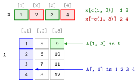

Subsetting by Position¶
Definition¶
Subsetting selects part of an object with square brackets. By position, the brackets contain index numbers, and positions start at 1:
x[i]selects the element at positioniof a vectorx; a vector of indices,x[c(1, 3)], selects several elements in the order given.- A negative index excludes positions:
x[-c(1, 3)]returns all elements except the first and third. x[i] <- valuereplaces the selected elements.- A matrix or a data frame takes two indices, row first and column second:
A[i, j]. A blank index selects everything in that dimension, soA[, 1]is the first column andA[2, ]the second row.
Selecting a single row or column of a matrix returns a plain vector; A[, 1, drop = FALSE] keeps it as a one-column matrix. For a data frame df whose third column is called Var3, df[1, 3] and df$Var3[1] select the same element.
Interpretation¶
An index is an address. x[3] asks for "the value in box 3", and A[1, 3] for "row 1, column 3", the same convention as the entry of a matrix in linear algebra. Because numbering starts at 1, the first element is x[1] and the last is x[length(x)].

In the top row of the figure (Example 1), x[c(1, 3)] keeps the green positions 1 and 3 and returns 1 3, while x[-c(1, 3)] drops them and returns the red positions, 2 4. In the matrix below (Example 3), A[1, 3] is the single cell in row 1 and column 3, holding 9, and A[, 1] leaves the row index blank and takes the whole first column, 1 2 3 4.
Positive indices pick and order: x[c(3, 1, 1)] is allowed and repeats the first element. Negative indices only remove, and the two kinds cannot be mixed in one index vector. Subsetting by position is one of three ways to index: selecting elements that satisfy a condition is logical subsetting, and lists add the distinction between [ ] and [[ ]] (single and double brackets).
The classic mistake comes from languages that count from 0. In R, x[0] is not the first element; it returns an empty vector, without an error. Asking for a position beyond the end, such as x[5] for a vector of length 4, returns NA instead of an error, so a wrong index can go unnoticed.
Key Results¶
- Positions start at 1;
x[c(i, j, …)]returns the selected elements in the order of the indices. x[-i]returns everything except positioni; positive and negative indices cannot be mixed.x[i] <- valuechanges the selected elements in place.A[i, j]: row index first, column index second; a blank index means all rows or all columns.- One row or column of a matrix is returned as a vector unless
drop = FALSE. x[0]returns an empty vector, and an index beyond the length returnsNA.
Examples¶
1. Selecting and excluding elements.
x <- c(1, 2, 3, 4)
x[1]
#> [1] 1
x[3]
#> [1] 3
x[c(1, 3)]
#> [1] 1 3
x[-c(1, 3)]
#> [1] 2 4
x[c(3, 1, 1)]
#> [1] 3 1 1
2. Replacing elements.
x <- c(1, 2, 3, 4)
x[1] <- 0
x
#> [1] 0 2 3 4
v4 <- c(1, 10, 1, 10)
v4[c(2, 4)] <- 0
v4
#> [1] 1 0 1 0
3. Rows and columns of a matrix.
A <- matrix(c(1, 2, 3, 4, 5, 6, 7, 8, 9, 10, 11, 12), nrow = 4, ncol = 3)
A
#> [,1] [,2] [,3]
#> [1,] 1 5 9
#> [2,] 2 6 10
#> [3,] 3 7 11
#> [4,] 4 8 12
A[1, 3]
#> [1] 9
A[c(1, 2), 3]
#> [1] 9 10
A[, 1]
#> [1] 1 2 3 4
A[2, ]
#> [1] 2 6 10
A[, 1, drop = FALSE]
#> [,1]
#> [1,] 1
#> [2,] 2
#> [3,] 3
#> [4,] 4
The matrix is filled column by column, so the third column holds 9 to 12.
4. Data frames, and pitfalls.
df <- data.frame(Var1 = c(1, 2, 3), Var2 = c(TRUE, FALSE, TRUE),
Var3 = c('A_13', 'A_23', 'A_33'))
df[1, 3]
#> [1] "A_13"
df$Var3[1]
#> [1] "A_13"
x <- c(1, 2, 3, 4)
x[0]
#> numeric(0)
x[5]
#> [1] NA
x[c(-1, 2)]
#> Error in x[c(-1, 2)] : only 0's may be mixed with negative subscripts
numeric(0) is R's way of printing an empty numeric vector.
Prerequisites¶
Related Concepts¶
Sources¶
- Programming for EOR · Week 1
- Lecture script Data Types and Structures (Part 2), section "Subsetting Data"; Matrix operations, random numbers and optimisation (Week 5), "Subsetting and combining matrices"
Aliases: indexing, square brackets, x[i], A[i, j], negative index, 1-based indexing, drop = FALSE Keywords: positive and negative indices, replacing elements, rows and columns, blank index, drop argument
Last updated: 10 November 2026 16:43
Subsetting by Positionfor LoopSingle and Double BracketsLogical SubsettingAtomic VectorMatrices in RData FrameVector RecyclingMatrix